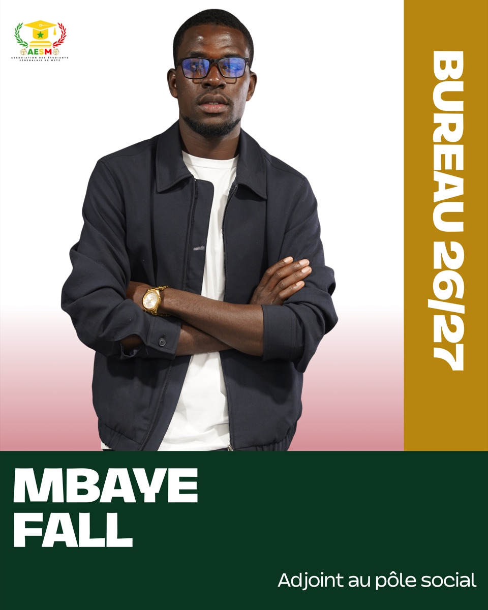
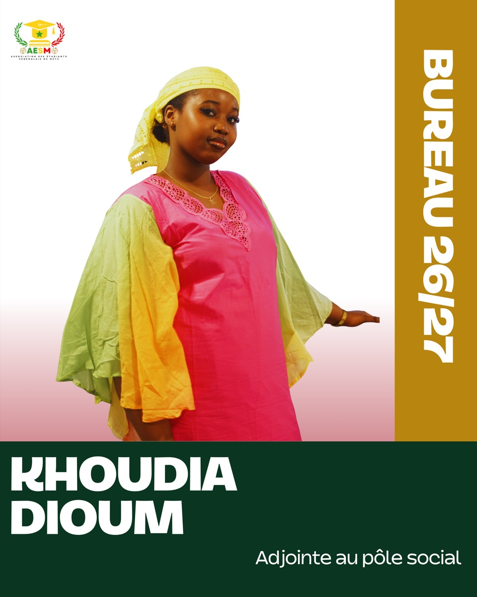
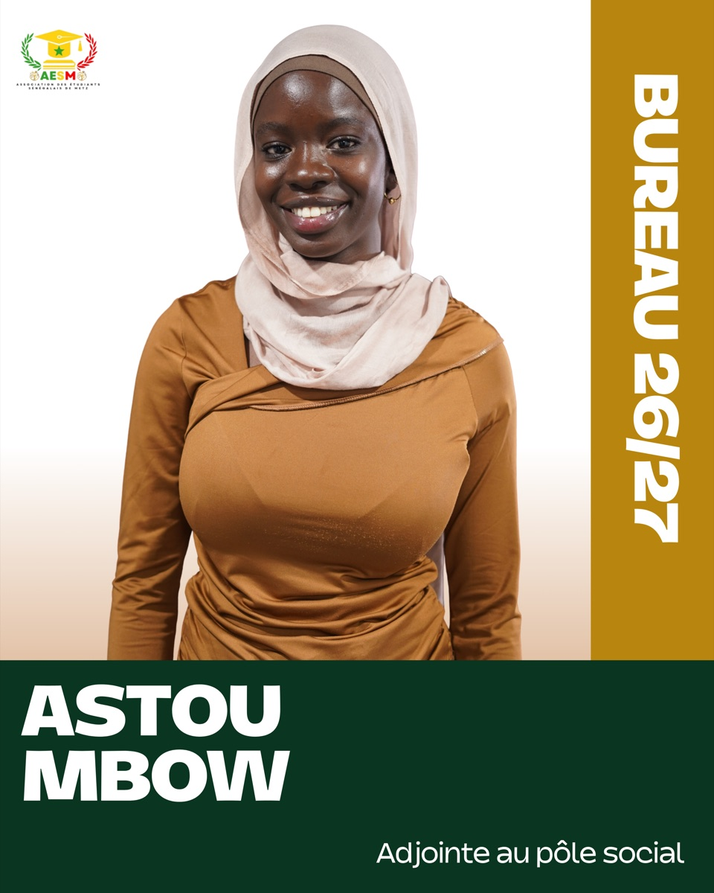

Ahmet TAMBEDOU
Président
mouhamet.tambedou@gmail.comSon rôle dans l’association
Ahmet donne le cap à l’AESM et représente l’association. Avec le bureau, Ahmet choisit les projets à lancer et fixe les priorités. En réunion, Ahmet s’assure que chaque pôle peut faire entendre ses idées. Quand plusieurs projets arrivent en même temps, Ahmet aide à trancher. Ahmet relève le défi de faire tenir toutes les bonnes idées dans un même calendrier !
Social
Malang CISSE
Responsable du pôle social
cissemalang11@gmail.comSon rôle dans l’association
Malang coordonne les actions d’entraide du pôle social. Malang écoute les besoins qui remontent et aide à trouver les bons relais. Pour une action solidaire, Malang organise les contributions de l’équipe. Malang veille aussi à faire circuler les informations pratiques. Avec Malang, demander un coup de main fait partie de la vie de l’asso.

Mbaye FALL
Adjoint au pôle social
mbaye.fall0104@outlook.comSon rôle dans l’association
Mbaye donne un coup de main aux actions solidaires de l’AESM. Mbaye aide à faire circuler les infos et à mobiliser les volontaires. Sur le terrain, Mbaye s’occupe des petites tâches qui facilitent l’entraide. Mbaye relaye les besoins rencontrés vers le reste du pôle social. Avec Mbaye, même un petit geste trouve sa place dans une action collective.

Khoudia DIOUM
Adjointe au pôle social
khoudiadioum2.0@gmail.comSon rôle dans l’association
Khoudia aide à organiser l’entraide entre les étudiants. Khoudia relaie les infos utiles et les bons plans du quotidien. Quand un besoin remonte, Khoudia en parle avec le pôle social. Khoudia aide à trouver la bonne ressource ou le bon interlocuteur. Avec Khoudia, une info qui peut dépanner est faite pour circuler.

Astou MBOW
Adjointe au pôle social
astoumbow784@gmail.comSon rôle dans l’association
Astou participe à l’accueil des étudiants qui rejoignent l’AESM. Astou présente les activités et aide chacun à repérer les bons contacts. Astou prend le temps d’écouter les questions des nouveaux membres. Quand une démarche semble floue, Astou aide à trouver par où commencer. Avec Astou, on peut poser la petite question qu’on gardait pour plus tard.